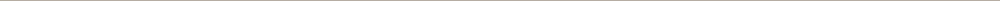

誰適合顯微根管治療?
如果您有以下需求或困擾，歡迎至木成診所預約諮詢，將有專業的醫師針對您的口腔狀況、生活習慣及需求，為你規劃完善的顯微輔助根管療程。
- 深度蛀牙
- 接受過根管治療但治療不完全的牙齒
- 牙齒運動或受過撞擊產生外傷，導致牙根尖受引發牙髓壞死
- 特殊形態根管：Ｃ形根管、根管分岔、牙中牙等
- 牙髓組織長期受刺激而壞死


根管治療是什麼?
在講到顯微輔助根管治療之前，我們要先來談什麼是「根管治療」?「根管治療」即是俗稱的抽神經，當嚴重蛀牙導致牙髓組織感染及牙周病變感染時，細菌侵入牙髓腔中。
牙根治療即是將有問題的牙髓腔打開，去除壞死或是發炎的牙髓組織，再利用填充物封填避免細菌從牙髓進入牙根尖，減除疼痛並免於牙齒被拔除。
傳統根管治療
木成引進顯微鏡輔助，根管治療更全面！
為了提升根管治療成功率，協助患者保留更多齒質，提升牙齒被保留的機會，木成特別自德國，引進高規格Ｚｕｍａｘ顯微鏡。
在顯微鏡高倍率的輔助下，搭配木成醫師的專業技術，讓醫師擁有更清楚的視野及充足的光源，在根管放大十倍的狀況下，掌握牙髓腔狀況，仔細清除受感染的牙髓神經，治療效果更佳。
顯微輔助根管治療



顯微輔助根管治療優點


誰適合顯微根管治療?
如果您有以下需求或困擾，歡迎至木成診所預約諮詢，將有專業的醫師針對您的口腔狀況、生活習慣及需求，為你規劃完善的顯微輔助根管療程。